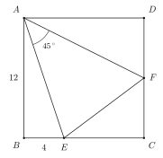
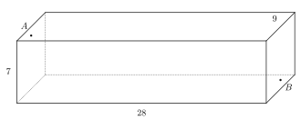

문제는 두 개뿐입니다. 둘 다 중학교 2학년 과정 안에서 풀리지만, 발상의 벽이 아주 높습니다. 1번은 보조선 하나가 전부이고, 2번은 어느 전개도를 고르느냐가 전부입니다. 계산은 가볍습니다. 연습장에 그림을 큼직하게 그려 가며 풀어 보세요.
한 변의 길이가 12인 정사각형 ABCD가 있다. 변 BC 위의 점 E와 변 CD 위의 점 F에 대하여 각 EAF의 크기는 45도이고 BE=4이다. 삼각형 AEF의 넓이를 구하시오.

가로 28m, 세로 9m, 높이 7m인 직육면체 모양의 창고가 있다. 세로 9m, 높이 7m인 두 벽면은 서로 마주 본다. 한쪽 벽면의 좌우 한가운데에서 천장으로부터 1m 내려온 지점을 A라 하고, 맞은편 벽면의 좌우 한가운데에서 바닥으로부터 1m 올라온 지점을 B라 하자. 개미 한 마리가 창고 안쪽 표면만 따라 A에서 B까지 기어간다. 벽, 천장, 바닥 어디든 지나갈 수 있다. 개미가 기어가는 거리의 최솟값을 구하시오.

힌트는 하나씩만 남깁니다. 1번은 AB=AD라는 심심한 사실이 열쇠입니다. 2번은 가장 그럴듯해 보이는 길이 답이 아닙니다. 풀이는 다음 장부터입니다. 충분히 버틴 다음에 넘기세요.
정사각형이니 AB=AD다. 이 심심한 사실이 보조선을 부른다. 삼각형 ABE를 통째로 떼어 AB가 AD에 포개지도록 옮겨 붙이자. B는 D로, E는 변 CD의 연장선 위의 점 G로 간다. 그래서 DG=BE=4다.
이제 각을 세어 보자. 각 BAD가 90도이고 각 EAF가 45도이므로 각 BAE와 각 DAF의 합도 45도다. 옮겨 붙인 그림에서 각 DAG=각 BAE이므로 각 GAF도 정확히 45도가 된다. 삼각형 AEF와 삼각형 AGF는 AE=AG이고 AF가 공통이며 끼인각이 45도로 같으니 SAS 합동이다. 그래서 EF=GF=DF+4다.
DF=x라 하자. 그러면 EF=4+x이고 EC=8이고 FC=12-x다. 직각삼각형 EFC에 피타고라스 정리를 쓴다.
양변을 전개하면 x의 제곱이 지워지고 32x=192만 남는다. 그래서 x=6이고 EF=10이다.
넓이는 합동인 삼각형 AGF에서 읽는 게 빠르다. 밑변 GF는 직선 CD 위에 있고 A에서 직선 CD까지의 거리는 12다.
답은 60이다.
표면 위 최단 경로는 전개도에서 직선이 된다. 함정은 전개하는 방법이 하나가 아니라는 데 있다. 길 후보를 하나씩 재 보자.
천장을 곧장 넘는 길부터. 벽을 1m 올라가 천장 28m를 가로지르고 반대쪽 벽을 6m 내려온다. 1+28+6으로 35다. 바닥 쪽으로 가도 6+28+1로 똑같이 35다.
옆벽을 돌아가는 길도 있다. 전개하면 이 길은 가로가 4.5+28+4.5로 37이고 세로가 7-1-1로 5인 직각삼각형의 빗변이 된다.
37을 넘으니 바로 탈락이다.
이제 다섯 면을 지나는 길을 보자. 벽에서 천장으로 올라가 옆벽으로 비스듬히 건너간 다음 바닥을 지나 반대쪽 벽에 닿는 길이다. 이대로 펼치면 아래 그림이 된다. 가로는 1+28+1로 30이고 세로는 4.5+7+4.5로 16이다.
35보다 짧다. 나머지 전개 방법도 전부 재 보면 다 35를 넘는다. 답은 34m다.
2번 유형의 원조는 1903년에 듀드니가 낸 거미와 파리 퍼즐입니다. 가로 30, 세로 12, 높이 12인 방에서 같은 계산을 하면 답이 40으로 딱 떨어지죠. 참고로 이번 문제의 최단 경로는 사실 두 개입니다. 왼쪽 옆벽을 타도 오른쪽 옆벽을 타도 거리가 같거든요. 그리고 1번에서 쓴 옮겨 붙이기는 정사각형 안에 45도가 보일 때마다 반사적으로 꺼내 볼 만한 기술입니다.